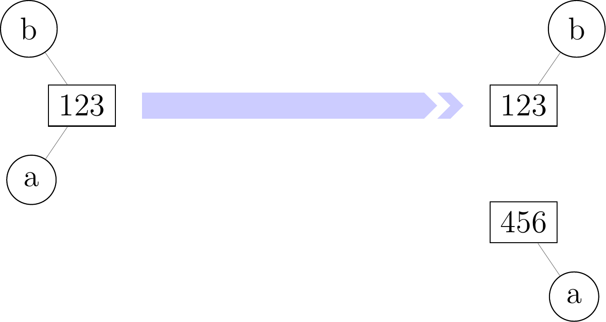
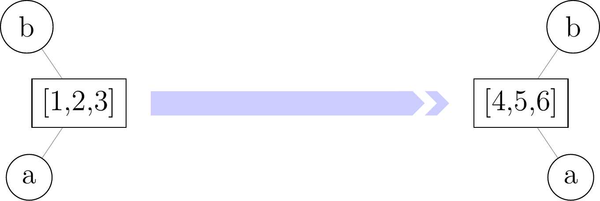

2.3. Mutabilité¶
Il s’agit d’un paragraphe un peu subtil : on expliquera notamment pourquoi il existe en Python des objets modifiables (comme les listes) et des objets non modifiables (comme les tuples ou les chaines). On parlera plutôt d’objets mutables ou immutables (c’est à nouveau un anglicisme).
Considérons ce premier exemple où les variables sont des entiers.
>>> a = 1
>>> b = a
>>> a = 2 # on modifie a
>>> a
2
>>> b # b n'a pas ete modifiee
1
Considérons maintenant l’exemple suivant où les variables sont des listes.
>>> a = [1, 2]
>>> b = a
>>> a[0] = 'foo' # on modifie la liste a
>>> a
['foo', 2]
>>> b # la liste b a aussi ete modifiee !
['foo', 2]
Pour expliquer la différence entre ces deux exemples, il faut comprendre la représentation des objets Python en mémoire. Pour cela, on va utiliser la fonction id. Pour schématiser, celle-ci renvoie l’emplacement en mémoire de l’objet lié à une variable.
>>> a = 1
>>> b = a
>>> id(a), id(b) # les variables a et b pointent vers le meme emplacement en memoire
(1951712944, 1951712944)
>>> a = 2
>>> id(a), id(b) # la variable b pointe toujours vers le meme emplacement mais plus la variable b
(1951712976, 1951712944)
L’instruction a=2 a donc utilisé un nouvel emplacement en mémoire pour stocker l’entier 2 et fait pointer la variable a vers ce nouvel emplacement.
>>> a = [1, 2]
>>> b = a
>>> id(a), id(b) # les variables a et b pointent vers le meme emplacement en memoire
(1962314394184, 1962314394184)
>>> a[0] = 'foo'
>>> id(a), id(b) # les variables a et b pointent toujours vers le meme emplacement
(1962314394184, 1962314394184)
Ici, l’instruction a[0]='foo' a modifié l’objet stocké à l’emplacement commun vers lequel pointent les variables a et b. Comme a et b pointent toujours le même emplacement en mémoire, la variable b est maintenant associée à ce nouvel objet.
Les choses s’éclaireront sans doute plus à l’aide d’un schéma.

An Example Directive with Caption

An Example Directive with Caption
Définition (bof)
Un objet est dit mutable si on peut changer sa valeur sans changer son emplacemenent en mémoire. Dans le cas contraire, l’objet est dit immutable.
On peut tomber sur des problèmes nettement plus vicieux qui peuvent se
>>> a = [[0] * 3] * 4
>>> a
[[0, 0, 0], [0, 0, 0], [0, 0, 0], [0, 0, 0]]
>>> a[0][0] = 1 # on pense n'avoir modifie qu'un element de la liste de listes a
>>> a # en fait non...
[[1, 0, 0], [1, 0, 0], [1, 0, 0], [1, 0, 0]]